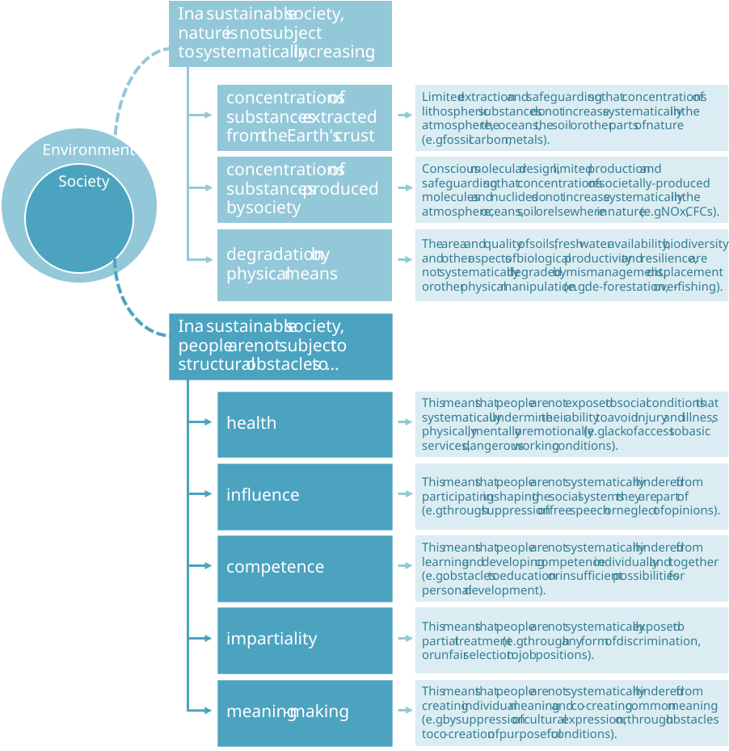
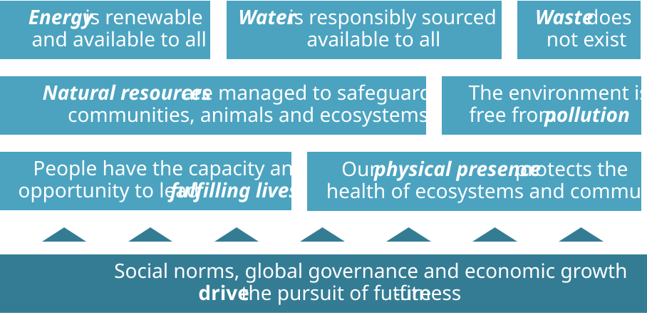

4. Where we need to go: a Future-Fit Society
John Masefield
4.1 Starting with the end in mind
What must we all aim for?
In the previous chapter we looked at the world through a systems lens to understand where humanity finds itself today, how we got here, and what has to change. We also learned that society can be viewed as a multi-layered network of interdependent social systems.
To overcome our global challenges (Figure 3.6), all social systems must act in the best interests of society as a whole, and operate in symbiosis with Earth’s natural systems. Only then will it be possible for our global economy to meet humanity’s needs within planetary limits. To get there requires both individual and collective action. And to ensure such action is effective, we need a shared destination to aim for:
A Future-Fit Society protects the possibility that humans and other life will flourish on Earth forever, by being socially just, economically inclusive, and environmentally restorative.4
So far so good, but to guide, recognize and reward the right kinds of behaviour we need something more actionable.
What specific outcomes must we all strive to deliver, to protect the possibility of human flourishing? What must we do with respect to energy or water use? How must we manage natural resources? And how should people be treated? Only when we can answer these questions can we find ways to signal how – and how much – any one social system has to change, and to identify who the true leaders are.
Fortunately, 25+ years of research has given us a solid foundation to build on.
4.2 The requirement for society
Eight system conditions point us toward a flourishing future.
Humanity can only hope to flourish if we have a unifying and operational definition of what it means for society to “be sustainable”, coupled with a systematic approach to planning and action in pursuit of this state.
This realization prompted a group of scientists in the early 1990s to begin work on what has become known in academia as the Framework for Strategic Sustainable Development, or FSSD (see below). Over the past quarter of a century the FSSD has been continuously refined through a combination of scrutiny against empirical data, real-world testing, and academic peer-review. At its core are eight system conditions that together identify how society must operate if we are to safeguard the social fabric and natural systems upon which our future depends. These system conditions are illustrated in Figure 4.1. They can be thought of as the ‘rules of the game’ to which we must all adhere. They indicate what patterns of behaviour are environmentally and socially acceptable, in the sense that they avoid causing degenerative outcomes.
Some of the ways in which these rules apply are readily apparent. For example, relying on energy from fossil fuels is a problem if the greenhouse gases caused by their combustion escape into the air. This outcome breaches the first system condition, because such emissions contribute to a systematic increase in nature of concentrations of substances extracted from the Earth’s crust.
The Framework for Strategic Sustainable Development (FSSD)
In 1989 Dr. Karl-Henrik Robèrt led the creation of the FSSD, and also founded The Natural Step, a non-profit whose mission is to promote and foster the use of the FSSD at a community, company, city and even country level.
The FSSD comprises a five-level model, which – together with the use of backcasting – serves both to define the required end state for society and to facilitate planning and action toward it. The system conditions form the second of the five levels. In academic texts these system conditions are referred to as Sustainability Principles, but the former term is favoured by many in a business context. For an excellent academic overview of the FSSD see [14].
The Future-Fit team is indebted to Karl-Henrik and The Natural Step – in particular the Canadian and Swedish teams – without whose early support the Future-Fit Business Benchmark would not exist.
Figure 4.1: The eight system conditions identifying how society must operate.

These system conditions serve as a guide for radical innovation.
The good news is that the eight system conditions offer clear guidance on what to aim for. Although they define what must not happen, this should be seen as liberating rather than restrictive: as long as they are not breached, anything is possible. Hence the system conditions foster radical innovation, by helping us steer toward a flourishing future without prescribing any specific course of action.
We must prevent future system condition breaches…
Every social system today breaches one or more of these system conditions routinely. While individual breaches may have a relatively small impact – not measurable at a planetary or societal level – their cumulative effects make these breaches unsustainable. Hence these system conditions represent the environmental and social break-even point for society as a whole.
…but we must also reverse the effects of past breaches.
Unfortunately, we have been breaching the system conditions for so long, and in so many ways, that we now have to do more than just avoid new breaches: we must find ways to reverse the effects of breaches that have already occurred.
From an environmental standpoint, this means actively restoring the Earth’s capacity to meet humanity’s needs – for example by regenerating biodiverse habitats, and neutralizing the effects of past pollution.
From a social perspective, we must overcome the structural obstacles to social justice and economic inclusion that still leave a large proportion of the world’s population without the capacity or opportunity to lead fulfilling lives.
4.3 Properties of a Future-Fit Society
The regenerative outcomes a Future-Fit Society would deliver.
In the previous chapter we synthesized everything we know about the environmental, societal and economic contexts, to identify eight focus areas that encompass how all social systems may affect people or the planet, for good or for ill.
By looking at each focus area through the lens of the FSSD system conditions, we can identify a comprehensive, topic-specific set of regenerative outcomes which we must all strive to deliver.
Appendix 1 summarizes how this mapping was done. We can think of the results of this as the eight Properties of a Future-Fit Society (see Figure 4.2), each of which is now described.
Figure 4.2: The seven core properties of a Future-Fit Society, plus an eighth enabling property, which identifies the socioeconomic drivers required to pursue the others.

4.3.1 Energy is renewable and available to all
All human activities – growing and cooking food, heating and lighting buildings, moving goods and people from one place to another – require energy.
Around 80% of the energy we consume today is from non-renewable resources, and in particular fossil fuels. When burned, these fossil fuels emit carbon dioxide, and this is one of the biggest contributors to climate change and ocean acidification.
The way we obtain fossil fuels is also a problem. Techniques such as fracking and strip-mining cause enormous disruption to the environment.
Not only that, a large proportion of the global population simply do not have sufficient access to energy to meet their daily needs. It is estimated that 20% of the world’s population have no access to electricity, and 2.7 billion people do not have clean and safe energy for cooking.
In a Future-Fit Society, all energy is from renewable sources – solar, wind, geothermal and so forth – which support clean growth and sustainable development. And sufficient energy is available to everyone, so that even the most remote communities can meet their daily needs.
4.3.2 Water is responsibly sourced and available to all
Fresh water is crucial to people’s health, for drinking, growing food, cooking and sanitation. But many people today do not have enough clean water to meet these basic needs.
In fact, it is forecast that by 2025 two thirds of the world’s population will live under conditions of water stress.
The responsible use of water is a complex issue, and impacts must be addressed at a local level, because watersheds can be affected by the removal of water from an area, the introduction of additional water, timing differences between withdrawals and discharges, and changes in water quality and other water characteristics such as heat and pH levels.
In many parts of the world, we’re consuming too much fresh water, and wastewater we return to the environment is often polluted.
So we’re reducing both the quantity and the quality of water available to communities and the ecosystems we depend upon.
In a Future-Fit Society, all water is responsibly sourced and available to all. We don’t exacerbate water stress, and the quality of any water returned to nature is at least as high as when it was withdrawn. And sufficient clean water is available to everyone, so that even the most remote communities can meet their daily needs.
4.3.3 Natural resources are managed to safeguard communities, animals and ecosystems
Society relies on a vast array of natural resources. This includes non-renewable resources, such as mined metals and minerals, and renewable resources such as crops and the soils that support them, animals, fish and forests.
Today, most natural resources are being inadequately managed: animal suffering, land degradation, and the abuse of local communities are common. We’re using renewable resources 1.7 times faster than they are being regenerated. What’s more, as the Earth’s most accessible non-renewable resources are used up, extraction methods often become increasingly disruptive.
So pretty much all of the goods we rely on – from food to phones – depend on natural resources whose production undermines people’s wellbeing or degrades the environment.
In a Future-Fit Society, natural resources are managed to safeguard communities, animals and ecosystems. Crops are grown on suitable land, and in ways that maintain soil health. Animals are reared or hunted in ways that minimize suffering. All renewable resources are managed to protect their future availability. And all non-renewable resources are extracted without degrading surrounding ecosystems and communities.
4.3.4 The environment is free from pollution
Almost all economic activities today – sourcing raw materials, manufacturing and using goods, transporting things around the world – cause some degree of pollution.
There is no longer any doubt that the systematically increasing concentration of greenhouse gases (GHGs) in the atmosphere is contributing to climate change, and other problems such as ocean acidification. All GHG emissions resulting from fossil fuel combustion and other human processes must be rapidly eliminated if we are to avoid the most catastrophic impacts of global warming.
Many other kinds of pollution harm people’s health and disrupt natural ecosystems. Examples include hazardous fertilizers and pesticides, toxic chemicals, and a wide range of synthetic substances which do not break down quickly and safely and so build up in nature.
In a Future-Fit Society, the environment is free from pollution. The air is breathable and free from noxious substances, soils are healthy, and waters are clean. All harmful emissions are avoided, and society continuously strives to reverse the damage done by past pollutants, to restore environmental health.
4.3.5 Waste does not exist
Almost all value chains today follow a linear take-make-waste approach. At every step, our methods of production and consumption typically result in material by-products, which are discarded as waste. Many valuable materials are incinerated or dumped in ways that disrupt the environment.
Demand for virgin resources can be mitigated if materials are repurposed, rather than discarded. Repurposing also eliminates the costs – financial, environmental and human – that waste disposal incurs.
In a Future-Fit Society, waste does not exist. Today’s take-make-waste approach to material use is supplanted by a borrow-use-return approach. All by-products of human activities – and goods that reach the end of their useful life – are transformed to serve other needs, in ways that maximize their re-use value.
4.3.6 Our physical presence protects the health of ecosystems and communities
Growing demand for land – as well as activities such fishing and mining – encroach on nature and have led to the destruction of pristine ecosystems, damage to culturally significant sites, and the abuse of local people’s rights.
As a result, many ecosystems – from rainforests to coral reefs – are on the brink of collapse, and the resilience of many communities is under threat.
In a Future-Fit Society, our physical presence protects the health of ecosystems and communities. Human activities do not encroach on the natural world, and society continuously strives to regenerate damaged ecosystems – and to restore community rights to land, resources and areas of cultural significance.
4.3.7 People have the capacity and opportunity to lead fulfilling lives
Society’s ability to thrive relies to a great extent on the wellbeing of the people that contribute to it.
But today billions of people are living in some form of poverty, lacking access to basic services and economic opportunity. What’s more, human rights abuses and discrimination are widespread.
In a Future-Fit Society, people have the capacity and opportunity to lead fulfilling lives. This means everyone is able to meet their basic needs – for nutrition, education, healthcare, and so on – while also being free to pursue higher needs – such as a sense of meaning, belonging, and creativity.
4.3.8 Social norms, global governance and economic growth drive the pursuit of future-fitness
The other seven properties of a Future-Fit Society describe the outcomes that such a society will deliver. In contrast, this property is about putting in place the conditions that will enable those outcomes.
Social norms, global governance and how we pursue economic growth are what drive the behaviours of all social systems. Today those drivers are misaligned, so we remain on the same breakdown trajectories that have led to the existential problems we are now facing.
Examples of breakthrough technologies and business models can be found everywhere, but until society starts to truly value and actively favour such endeavours, it may prove impossible to replicate their success at sufficient speed and scale.
In a Future-Fit Society, social norms, global governance and economic growth drive the pursuit of future-fitness. Rapid and radical progress becomes the rule rather than the exception, because society recognizes and rewards actions that move us in the right direction.